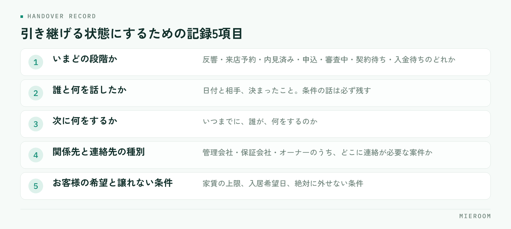

担当が休んだ日に、その人の携帯だけが鳴る。退職の連絡を受けてから、慌てて案件を聞き取る。賃貸仲介の店舗で起きるこの2つは、同じ原因から来ています。引き継げない案件とは、記録されていない案件のことです。引き継ぎの手順を整える前に、日々どこまで残しているかを見直す必要があります。
この記事の結論
引き継ぎが重いのは、渡し方が悪いからではなく渡せる形で記録が残っていないからです。案件ごとに「いまどの段階か」「誰と何を話したか」「次に何をするか」が書かれていれば、引き継ぎは読めば済む作業になります。
引き継ぎが重くなるのは、記録が頭の中にあるから
賃貸仲介の案件は、問い合わせから契約までに関わる相手が多い業務です。お客様、管理会社、保証会社、オーナー、ときには提携先の業者。それぞれと交わした会話のうち、紙や画面に残っているのはごく一部で、あとは担当者の記憶の中にあります。
この状態でも、担当がいる間は問題が起きません。聞けば答えが返ってくるからです。困るのは、その人が不在のときだけ。つまり属人化は、普段は見えず、都合の悪いときにだけ表に出ます。
そして引き継ぎの場面では、記憶から取り出す作業が必要になります。案件ごとに思い出して話し、受ける側がメモを取る。1件なら10分で済みますが、20件あれば半日以上かかります。退職までの期間が短いと、そもそも時間が取れません。
結果として、引き継いだつもりでも抜けが出ます。抜けが出たことに気づくのは、お客様から「前の担当者さんに伝えてあります」と言われたときです。
記録に残す5項目
案件ごとに残しておく項目を絞ります。多くすると書かれなくなるので、次の5つだけに限定するのが現実的です。

- いまどの段階か：反響・来店予約・内見済み・申込・審査中・契約待ち・入金待ちのどれか
- 誰と何を話したか：日付と相手、決まったこと。言った言わないになりやすい条件の話は必ず
- 次に何をするか：いつまでに、誰が、何をするのか
- 関係先と連絡先の種別：管理会社・保証会社・オーナーのうち、どこに連絡が必要な案件か
- お客様の希望と譲れない条件：家賃の上限、入居希望日、絶対に外せない条件
この5つが埋まっていれば、引き継ぐ側が説明しなくても、受ける側が読んで動けます。逆に言えば、この5つのどれかが空欄の案件は、いま引き継げない案件です。
「次に何をするか」を書くだけで引き継ぎは変わる
5項目のなかで効き方がいちばん大きいのが、3つめの「次に何をするか」です。
段階と履歴だけが残っていると、受けた側は読んだあとで判断を迫られます。審査中と書いてあっても、結果を待てばいいのか、こちらから確認するのか、お客様に連絡する約束があるのかは分かりません。ここで判断を間違えると、止まるか、二重に連絡することになります。
書き方は短くて構いません。「明日10時に保証会社へ結果確認」「金曜までにお客様へ候補2件を送る」。日付と動作が入っていれば十分です。
あとでまとめて書こうとすると、思い出す作業が入るぶん、かかる時間が増えます。来店対応や電話が終わった直後に、段階と次の動作だけでも入れておくほうが軽く済みます。記録が増えない店舗は、たいてい「落ち着いたら書く」運用になっています。
内見時に聞いた条件をどこまで残すかは来店時のヒアリング項目にも整理していますので、あわせてご覧ください。
休みの日に電話がかかる状態を直す手順
引き継ぎは退職時だけの話ではありません。休日や有給のたびに担当者へ連絡が入る店舗は、毎週小さな引き継ぎ失敗を起こしています。直す手順は4つです。
- 休む人の案件を、前日に一覧にする。段階と次の動作が入っているかを確認します
- 空欄の案件だけを口で補う。全件を説明する必要はありません
- 連絡が来たときの一次対応者を決める。誰が受けるかを決めておかないと、結局は本人の携帯が鳴ります
- 休み明けに、対応した内容を記録へ戻す。ここを飛ばすと記録と実態がずれます
このうち4番目が抜けがちです。休み中の対応が本人に口頭で伝えられるだけだと、記録は古いまま残り、次に別の人が見たときに誤った前提で動きます。
退職や異動でまとめて引き継ぐときの進め方
残り期間が決まっている引き継ぎでは、全件を均等に扱わないことが大事です。進め方を順に挙げます。
まず案件を段階で3つに分けること。契約・入金が目前のもの、審査や申込で動いているもの、追客中のものです。期日が近いものから引き継ぎます。
次に、契約・入金が目前の案件だけは、受ける側と一緒に連絡を1回入れること。担当が変わることをお客様と関係先に伝える機会になり、言い忘れが防げます。
追客中の案件は、1件ずつ説明しても覚えられません。希望条件と最後に接触した日が記録に残っていれば、受けた側が自分の順番で動けます。
お客様と担当者が個人の携帯番号やSNSでつながっている案件は、記録の有無とは別に引き継ぎが難しくなります。店舗の連絡手段に寄せておくか、少なくとも「どの経路でやり取りしているか」を案件の記録に書いておいてください。退職後に連絡が取れなくなるのは、この形の案件です。
記録が残る形にするには、書く場所を1か所にする
項目を決めても、書く場所が分かれていると埋まりません。来店の記録は紙のカード、申込の進み方は管理表、お客様とのやり取りはメールの履歴。こうなると、1件を把握するために3か所を開くことになり、誰も全部は見なくなります。
先に項目を決め、次に書く場所を1か所にし、最後に「いつ書くか」を決めます。この順番を逆にすると定着しません。場所から決めると、何を書くかが人によってばらつきます。
申込から入金までの流れを1か所にまとめる考え方は申込管理表の作り方で詳しく扱っています。紙とExcelが混在している状態から整える手順は紙とExcelが混在した管理からの移行もあわせてご覧ください。
記録を書く時間が取れないという声が出ます。どうすればよいですか？
引き継ぎの資料は別に作ったほうがよいですか？
1人や少人数の店舗でも記録は必要ですか？
まとめ：引き継ぎは、日々の記録の結果に出る
引き継ぎの良し悪しは、渡すときの丁寧さよりも、それまでに何が残っていたかで決まります。段階・履歴・次の動作・関係先・希望条件の5つを案件ごとに残しておけば、休みの日も退職時も、読めば動ける状態になります。
属人化は能力の問題ではなく、記録の置き場所と書くタイミングの問題です。書く場所を1か所にして、接客の直後に入れる。この2つを決めるだけで、引き継ぎにかかる時間は変わります。
ミエルームなら、反響から来店・申込・入金までを案件ごとに1行で記録でき、接客の履歴と次の動作も同じ画面に残せるので、担当が休んだ日も退職するときも、画面を見た人がそのまま続けられます。引き継ぎのために案件を聞き取ってまとめる時間がなくなり、不在時の連絡を他のスタッフが受けられるようになります。デモアカウントの発行やご相談は、この下のボタンからお気軽にどうぞ。